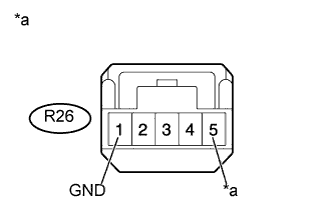

DTC B1242 Неисправность цепи приемника системы дистанционного управления замками дверей |
| Код DTC | Условие обнаружения DTC | Неисправный участок |
| B1242 | Сигнал RDA, соответствующий сигналу PRG, посланному главным ЭБУ кузова, не может быть получен в течение 1 секунды. |
|
| 1.УДАЛИТЕ DTC |
Сбросьте коды DTC (Нажмите здесь).
| ДАЛЕЕ | |
| 2.ПРОВЕРЬТЕ DTC |
Проверьте коды DTC (Нажмите здесь).
|
| ||||
| OK | ||
| ||
| 3.ПРОВЕРЬТЕ ЖГУТ ПРОВОДОВ И РАЗЪЕМ (ПРИЕМНИК СИСТЕМЫ ДИСТАНЦИОННОЙ БЛОКИРОВКИ ДВЕРЕЙ - ГЛАВНЫЙ ЭБУ КУЗОВА) |
Отсоедините разъем R26 приемника.
Отсоедините разъем G64 ЭБУ.
Измерьте сопротивление в соответствии со значениями, приведенными в таблице ниже.
| Контакты для подключения диагностического прибора | Условие | Заданные условия |
| R26-2 (RDA) - G64-26 (RDA) | Всегда | Менее 1 Ом |
| R26-3 (PRG) - G64-25 (PRG) | ||
| R26-2 (RDA) или G64-26 (RDA) - масса | Всегда | 10 кОм или более |
| R26-3 (PRG) или G64-25 (PRG) - масса |
|
| ||||
| OK | |
| 4.ПРОВЕРЬТЕ ЖГУТ ПРОВОДОВ И РАЗЪЕМ (ПРИЕМНИК СИСТЕМЫ ДИСТАНЦИОННОГО УПРАВЛЕНИЯ ЗАМКАМИ ДВЕРЕЙ - АККУМУЛЯТОРНАЯ БАТАРЕЯ И МАССА) |
|  |
Отсоедините разъем R26 приемника.
Измерьте сопротивление и напряжение в соответствии со значениями, приведенными в таблице.
| Контакты для подключения диагностического прибора | Условие | Заданные условия |
| R26-1 (GND) - масса | Всегда | Менее 1 Ом |
| Контакты для подключения диагностического прибора | Условие | Заданные условия |
| R26-5 (+B) - масса | Всегда | 11–14 В |
| *a | Вид спереди разъема со стороны жгута проводов: (к приемнику системы управления замками дверей) |
|
| ||||
| OK | |
| 5.ЗАМЕНИТЕ ПРИЕМНИК СИСТЕМЫ УПРАВЛЕНИЯ ЗАМКАМИ ДВЕРЕЙ |
Временно замените приемник системы управления замками дверей новым.
Выполните процедуры регистрации (Нажмите здесь).
| ДАЛЕЕ | |
| 6.УДАЛИТЕ DTC |
Удалите коды DTC (Нажмите здесь).
| ДАЛЕЕ | |
| 7.ПРОВЕРЬТЕ DTC |
Проверьте коды DTC (Нажмите здесь).
|
| ||||
| OK | ||
| ||